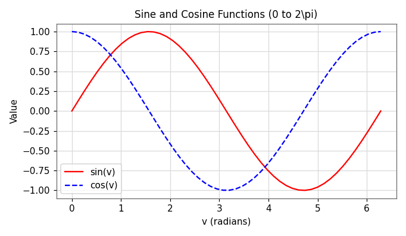

Computing with MATLAB
Implement numerical techniques in MATLAB. Before we can solve hard numerical problems, we need a fluent command of the tool: the environment, arrays, programming constructs, vectorization, and the limits of finite-precision arithmetic.
Why MATLAB for scientific computing?
MATLAB — short for MATrix LABoratory — is both an interactive computing system (type a command, get an answer immediately) and a programming language. Its native data type is the matrix, which makes it a natural fit for numerical methods, where almost everything reduces to operations on vectors and matrices.
In this module you will learn just enough of the language to implement every method in the rest of the course. The recurring theme is simple: think in arrays, not loops.
1.1 The MATLAB environment
When you open MATLAB you meet four key panels: the Command Window (type commands, see results), the Workspace (the variables currently in memory), the Editor (where you write .m script and function files), and the Current Folder browser.
Two commands you will use constantly:
clc— clear the command window (tidy the screen).clear— remove all variables from the workspace (start fresh).
A trailing semicolon ; suppresses output. Without it, MATLAB echoes the result of every line — useful while debugging, noisy in finished code.
Printing results
Use disp for quick output and fprintf for formatted output. Format specifiers: %d (integer), %f (float), %.2f (2 decimals), \n (new line).
Hello, MATLAB!
10
The value of a is 5
The value of b is 3.14
a = 5, b = 3.1416Source: lecture notes matlab_basics_01.m.
1.2 Matrices and vectors
Everything in MATLAB is an array. A scalar is a \(1\times 1\) array, a row vector is \(1\times n\), a column vector is \(n\times 1\), and a matrix is \(m\times n\).
- Square brackets
[ ]build arrays. Spaces (or commas) separate columns; semicolons separate rows. zeros(m,n)andones(m,n)pre-build arrays of a known size — important for preallocation.- The colon operator
start:step:stopgenerates evenly spaced vectors.
rowVec =
1 2 3 4
colVec =
1
2
3
4
matA =
1 2 3
4 5 6
7 8 9
Z =
0 0 0 0
0 0 0 0
O =
1 1
1 1
1 1
v1 =
1 2 3 4 5
v2 =
2 4 6 8 10
v3 =
10 8 6 4 2A(:) flattens a matrix into a single column by reading down each column in turn. This matters for linear indexing and for writing fast code.1.3 Operations and indexing
Indexing: A(row, col)
Use parentheses to read or write elements. A colon means “all” along that dimension, and end refers to the last index.
a12 = 20 col2 = 20 50 80 row1 = 10 20 30 ans = 90
Element-wise vs. matrix operations
This is the single most common source of beginner errors. A dot before *, /, or ^ means “do it element by element”. Without the dot, MATLAB performs the linear-algebra operation.
x .* y · x ./ y · x .^ 2Each element combined with the matching element. Arrays must be the same size.
A * B · A ^ 2 · A \ bTrue matrix multiply, power, and solve. Inner dimensions must agree.
elem_mul =
2 8 18
elem_pow =
4 16 36
mat_mul =
17
39
mat_pow =
7 10
15 22
mat_div =
1 0
0 1
x_sol =
-4.0000
4.5000x = A\b (backslash), not inv(A)*b. The backslash is faster and more accurate — a theme we return to in Module 2.1.4 Scripts, functions, and flow control
A script m-file is just a list of commands run top to bottom, sharing the workspace. A function m-file takes inputs and returns outputs in its own private workspace — the right tool for any reusable computation (every numerical method we write will be a function).
Conditions and loops
if / elseif / else choose between branches; for repeats a fixed number of times; while repeats until a condition fails. The mod(a,b) remainder function is your friend for parity and divisibility tests.
x is less than 10 i = 1 i = 2 i = 3 i = 4 i = 5 count = 1 count = 2 count = 3 count = 4 count = 5 2 is even 4 is even 6 is even 8 is even 10 is even
Writing a function
A function file begins with the function keyword. Here is a reusable helper that returns both sine and cosine of a vector — we will reuse this pattern (a function plus a calling script) for every numerical method.

Source: lecture notes matlab_basics_02/03.m and the FA2025 MATLAB question bank.
1.5 Vectorization — from loops to array operations
Vectorization means operating on entire arrays at once instead of element by element in a loop. MATLAB runs array operations in optimized, compiled C routines, so vectorized code is dramatically faster and closer to the mathematics.
Measure first: tic / toc
Before optimizing, measure. tic starts a stopwatch and toc reports the elapsed seconds.
Elapsed time is 0.482137 seconds. % loop version Elapsed time is 0.003915 seconds. % vectorized version (Exact timings vary by machine; the vectorized version is typically 10–100× faster.)
The pattern
Replace a loop that builds y(i) from x(i) with a single array expression:
No Command Window output — this snippet only assigns y (it assumes x is already defined and uses a semicolon-free comparison only in comments).
Logical indexing — selecting with conditions
Logical indexing is one of the most powerful ideas in MATLAB — and one of the most confusing the first time you meet it. Once it clicks, entire loops collapse into a single readable line. The secret is to stop reading v(v > 0) as one mysterious thing and instead see it as three separate steps that happen in order.
v > 0 is tested at every element at once, producing a logical mask: an array the same size as v holding only true (1) or false (0).② Mask. That mask records which positions passed the test — it is a genuine array you can store and look at.
③ Apply. Use the mask as an index to read the marked elements (
v(mask)) or to write them (v(mask) = …). Everything not marked is left untouched.
The step people skip is ①→②: the comparison is not a question, it is an array. Store it and print it to see for yourself:
mask = 1×7 logical array 0 0 0 1 1 0 1 pos = 2 5 8
Choose a condition. The top row is the vector v; the bottom row is the mask MATLAB builds. Press Animate to watch each element get tested left to right, or change any control for an instant update.
Reading vs. writing with a mask
Once you have a mask, the same square brackets do two very different jobs depending on which side of the = the indexed array sits.
- Read / select:
pos = v(v>0)— pulls the marked elements out into a new (usually shorter) vector. - Write / modify in place:
v(v<0) = 0— overwrites only the marked elements and leaves the rest exactly as they were. The right-hand side is either one scalar (broadcast to all marked spots) or an array with as many values as there aretrues in the mask.
pos = 2 5 8 n = 3 v = 0 0 0 2 5 0 8
Logical indexing works on matrices too — the mask matches the matrix shape. Pick an operation and press Animate to see each element tested, then either pulled out (select) or overwritten (modify).
Combining conditions: & and |
Real filters usually need more than one test. Join masks element-wise with & (and — both must pass) or | (or — either passes). You can build a two-sided band this way. (Try the "add 2nd condition" box in the demo above.)
inRange = 0 2 5 outside = -3 -1 -7 8 idx = 4 5 7
& and |, not && / || for arrays — the double forms are for single true/false values and will error or mislead on vectors.2. Mind the parentheses: write
v(v>=0 & v<=5); comparison and & mix in a way that often needs them.3. Mask size must match the array it indexes — it comes from a comparison on that same array, so this is automatic unless you mix arrays.
4. Positions vs. values:
v(v>0) gives the values; use find(v>0) when you need the indices.
sum(A), sum(A,2) (row sums), reshape(A,m,n), A(:) (flatten), and matrix multiply A*B all replace nested loops. The triple-loop matrix multiply is a classic example: C = A*B; does the same job in one line and orders of magnitude faster.| Task | Loop | Vectorized |
|---|---|---|
| Square a range | for i…: a(i)=i^2 | (1:n).^2 |
| Sum a vector | s=0; for…: s=s+A(i) | sum(A) |
| Row sums | double loop | sum(A,2) |
| Matrix product | triple loop | A*B |
Source: Vectorization in MATLAB Programming lecture (Dr. Arash Kermani Kolankeh).
1.6 How computers store numbers
Computers store real numbers in a finite number of bits using the floating-point format (IEEE 754 double precision: 1 sign bit, 11 exponent bits, 52 fraction bits). Because the fraction is finite, most decimals cannot be stored exactly — only the nearest representable value.
The gap between 1 and the next representable number is machine epsilon, \(\varepsilon \approx 2.22\times10^{-16}\) in double precision (eps in MATLAB). It bounds the relative round-off of a single operation.
The classic demonstration: in floating point, \(0.1 + 0.2\) is not exactly \(0.3\). The demo below computes it with the same IEEE-754 arithmetic your browser and MATLAB both use.
Pick two decimals and add them. The readout shows the result to 20 digits — far past what the screen normally prints.
==). Numerical methods always compare against a small tolerance \(\varepsilon\), e.g. stop when abs(x_new - x_old) < 1e-6. You will see this stopping rule in every method that follows.🎛 Demo: sampling & plotting
MATLAB's plot(x,y) does not draw a smooth curve — it connects your sample points with straight line segments. Use linspace to choose how many points. Too few and the curve looks jagged; enough and it looks smooth. Drag the slider and watch.
The faint line is the true curve; the colored polyline is what plot actually draws through your samples.
Self-check · CLO-1
Five questions on the MATLAB essentials. Pick an answer to see the explanation.